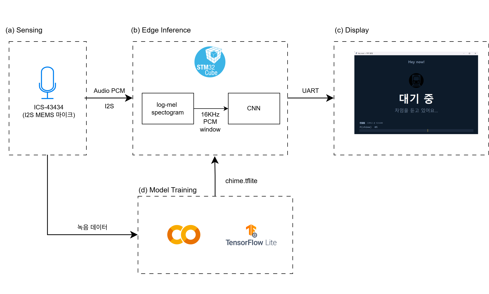
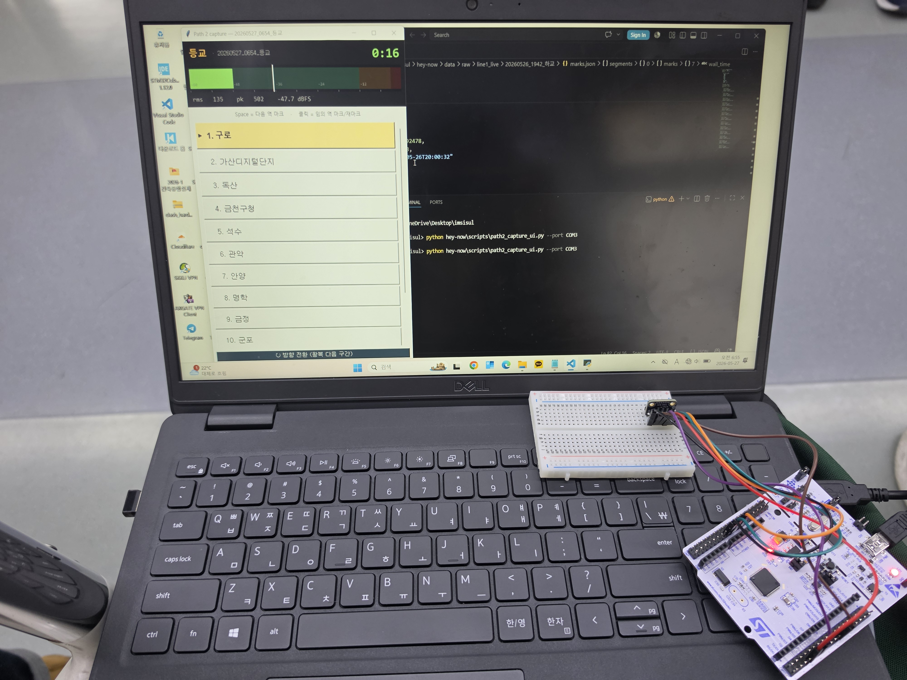
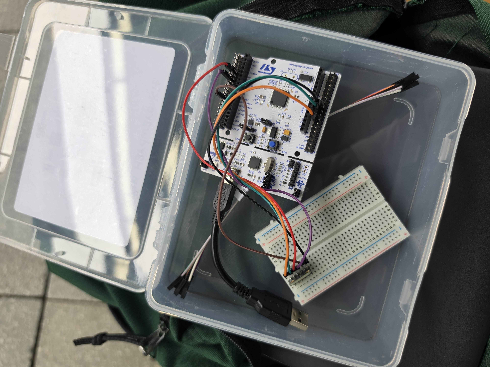
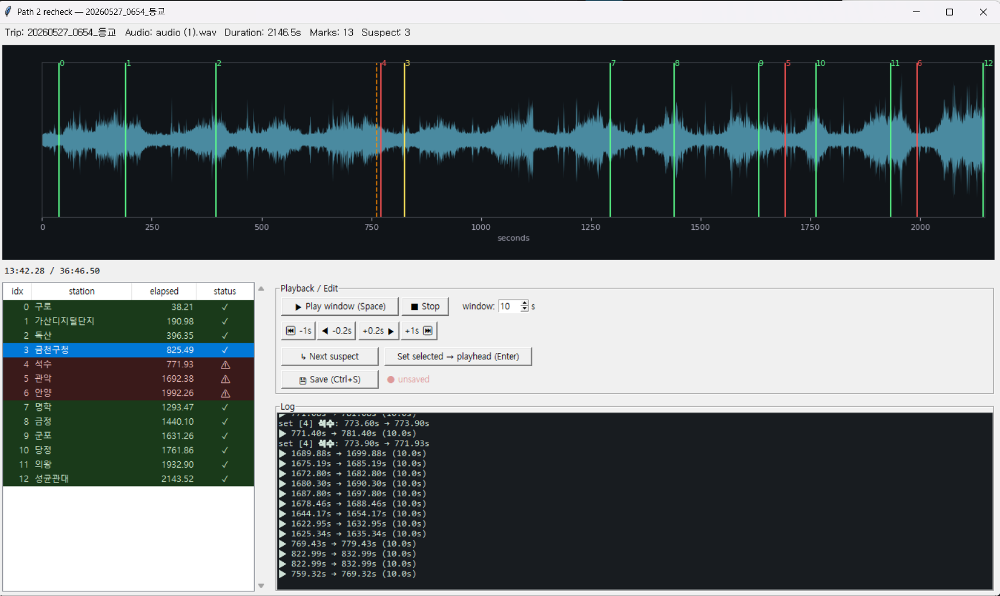
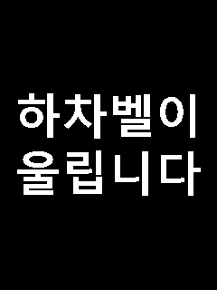

청각장애인, 그리고 이어폰·통화로 안내방송을 놓치는 상황적 청각차단 사용자
지하 구간은 GPS·셀룰러 측위가 부정확/차단. 안내방송은 이미 차내에 존재하는 위치 신호
차내 음향을 TinyML(STM32)로 인식해 "지난 역 / 현재 역"을 별도 인프라 없이 알림




같은 녹음을 그대로 재생 — 역 이름·억양·타이밍이 녹음마다 동일. 모델이 새로 배울 게 없음
노이즈는 합성으로 보강 가능. 진짜 변수 = 채널(차량 PA·객차 음향·마이크 위치) — 녹음한 열차 수만큼만 모임
"이번 역은" 트리거(KWS) → 직후 2초로 14역 분류(CNN). 서울교통공사 음원으로 학습·시연.
| 재학습 시도 | 처음 타는 정확도 |
|---|---|
| 13-class softmax | 19% |
| ProtoNet 임베딩 | ~42% |
| 채널적대 (GRL) | 44% |
| "이번역은" 트리거 검출 · 8회 LOO | 검출함 | 검출 안 함 |
|---|---|---|
| 실제 "이번역은" 안내 96개 | 80 (TP) | 16 (FN) |
| 안내 아님 (잡담·"다음역은"·KTX) | 447 (FP) | 정상 기각 (TN) |
문 닫힘 후 나는 출발 신호음(삐리리리)은 열차가 바뀌어도 똑같이 들려, 안정적인 이벤트 마커가 됩니다
채널마다 절대 음량이 달라, per-window CMN(채널 평균 정규화) 없으면 라이브 검출 0개. 정규화하면 출발 신호음 검출이 살아남 — 차임 검출에도 동일 적용
완행은 정차=역수 1:1, 노선은 단조 이동 → 출발 신호음을 세어 지난역/현재역 추정
| 출발 신호음 검출 · 7회 LOO (HPSS) | 검출함 | 검출 안 함 |
|---|---|---|
| 실제 출발 신호음 79개 | 74 (TP) | 5 (FN) |
| 비신호음 구간 | 72 (FP) | 정상 기각 (TN) |

F411: 512KB Flash · 128KB SRAM · 100MHz(FPU). 무거운 임베딩 인코더(646KB)는 못 올려 — 가벼운 모델만 온디바이스로 가능
안내방송은 같은 녹음 재생이라 변하는 건 채널(차량 PA·객차 음향·마이크)뿐. 채널 수 = 탑승 수라 처음 타는 열차의 역 이름 분류는 본질적 천장
채널이 바뀌어도 똑같이 들리는 출발 신호음을 채널 불변 이벤트 마커로 검출 — 7회 LOO recall 94%(74/79). STM32 온디바이스에서 마이크 → 검출 → 실시간 알림 동작 확인
감사합니다. 질문 부탁드립니다.